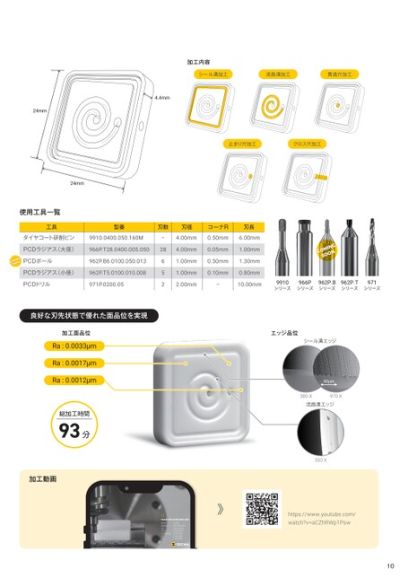

p.10加工事例 セラミック加工3

加工内容
シール溝加工 流路溝加工シール溝加工貫通穴加工 流路溝加工 貫通穴加工
4.4mm
24mm
止まり穴加工 クロス穴加工
24mm
使用工具一覧
型番 工具刃数 刃径 コーナR 型番 刃長刃数 刃径 コーナR 刃長
9910.0400.050.160Mダイヤコート研削ピン ー 4.00mm9910.0400.050.160M 0.50mm 6.00mmー 4.00mm 0.50mm 6.00mm
966P.T28.0400.005.050PCDラジアス(大径) 28 4.00mm966P.T28.0400.005.050 0.05mm 1.00mm28 4.00mm 0.05mm CO 1.00mm
962P.B6.0100.050.013PCDボール 6 1.00mm962P.B6.0100.050.013 0.50mm 1.30mm6 1.00mm 0.50mm 1.30mm
962P.T5.0100.010.008PCDラジアス(小径) 5 1.00mm962P.T5.0100.010.008 0.10mm 0.80mm5 1.00mm 0.10mm 0.80mm
971P.0200.05PCDドリル 2 2.00mm 971P.0200.05 ー 10.00mm2 2.00mm 9910 966P ー962P.B 10.00mm 962P.T 9719910 966P 962P.B 962P.T 971
シリーズ シリーズ シリーズ シリーズ シリーズ
良好な刃先状態で優れた面品位を実現
加工面品位 エッジ品位 エッジ品位
Ra:0.0033μm シール溝エッジ シール溝エッジ
Ra:0.0017μm
Ra:0.0012μm 80μm 80μm
380X 970X
流路溝エッジ
総加工時間
93分
350X
加工動画
https://www.youtube.com/
watch?v=aCZhRWp1Psw
10